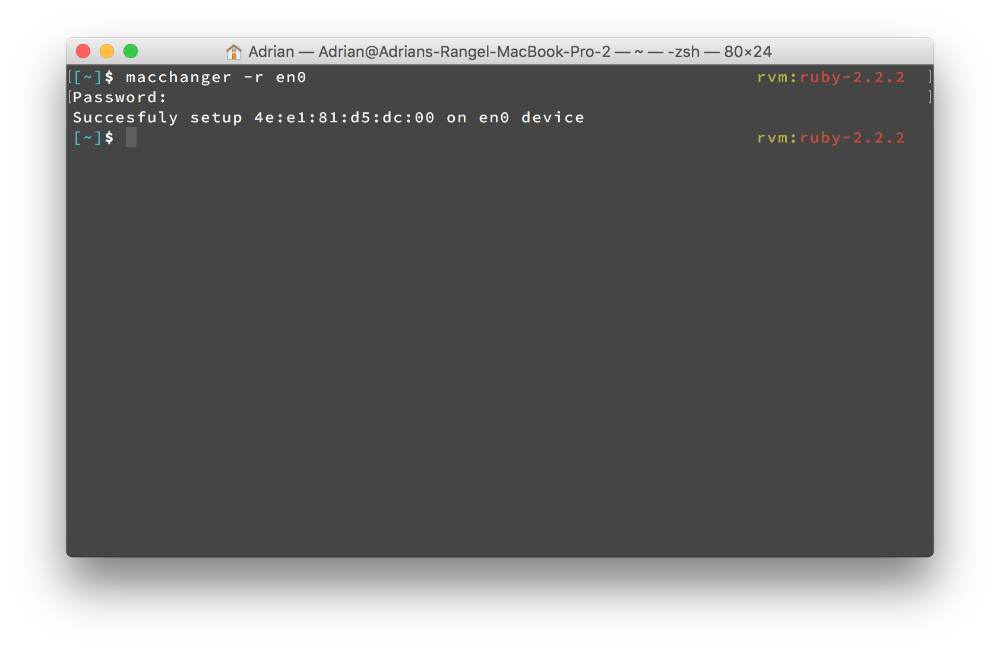

macchanger
Easily change your mac address, for OS X
Usage
Usage: macchanger [options] device
-m, --mac MAC Set the MAC address, macchanger -m XX:XX:XX:XX:XX:XX en0
-r, --random Set random MAC address, macchanger -r en0
-s, --show Show the MAC address, macchanger -s en0
Install
- Install brew (http://brew.sh/)
brew updatebrew install acrogenesis/macchanger/macchanger
Contributing
- Fork it.
- Create a branch
git checkout -b my_markup - Commit your changes
git commit -am "Cool new feature" - Push to the branch
git push origin my_markup - Open a Pull Request
- Enjoy a refreshing
Insert Favorite Beverageand wait